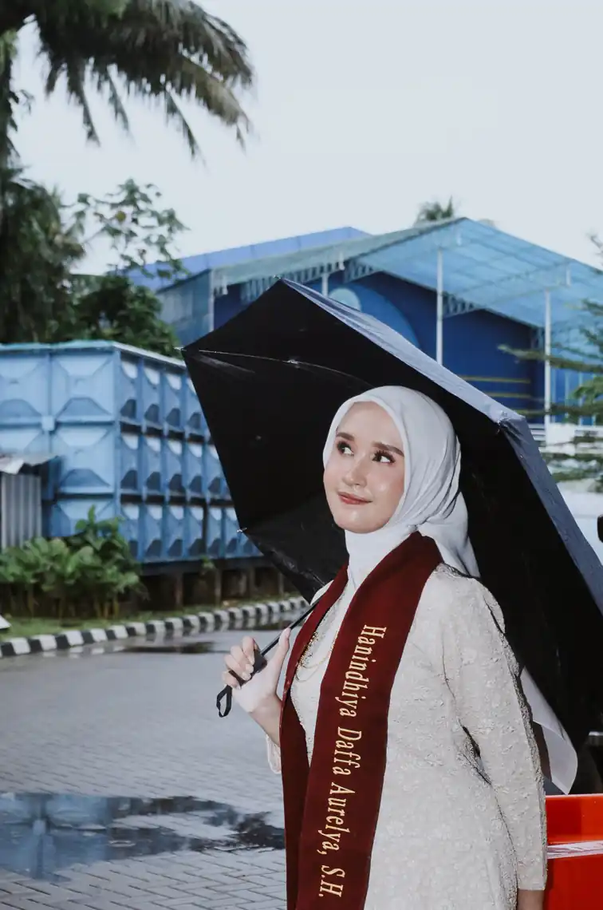

A closer look at the person behind the paperwork.
HanindhiyaDaffaAurelya.
Law graduate with hands-on experience in legal administration, customer-facing service, and daily operations.
Read the experience register
Care with a file.
Care with a person.
At the South Jakarta Religious Court, Hanindhiya supported lawsuit administration and case-file management. In retail and service roles, she handled transactions, customer needs, and operational reporting.
Different settings, connected by an attention to records, process, and people.
Customer service
Operational reporting
The experience
register.
An account of the work, responsibilities, and settings that have shaped her professional experience. Select a record to read the details.
Showing all four records.
01Legal administrationLegal Administration Support InternSouth Jakarta Religious CourtFebruary 2024
- Assisted with the receipt of lawsuits and checking the completeness of submitted data and documents.
- Prepared, processed, and managed case files across administrative stages.
- Supported systematic archiving and compliance with applicable procedures.
02Retail & customer serviceCashierPT Ramayana Lestari Sentosa Tbk · Ciplaz Depok BranchMarch – April 2025
- Operated POS machines for cash, debit, and credit transactions.
- Recorded daily sales transactions for reporting.
- Delivered direct customer service during checkout.
03Food service & outlet operationsOutlet CrewBreeze Ice Cream FH UISeptember – December 2024
- Served customers and responded to their needs.
- Handled transactions, supported outlet operations, and prepared inventory and sales reports.
- Maintained the outlet environment and worked with the service team.
04Retail operationsCrew OutletITC DepokAugust – September 2024
- Supported clothing-store operations and customer service.
- Assisted sales transactions and shopping experience.
- Compiled daily stock and sales reports.
A foundation
in law.
of Law
UIN Syarif Hidayatullah Jakarta
2021 – 2026
Law Science · UIN Syarif Hidayatullah Jakarta
Training & certifications
Year / InstitutionCenter for Language Development, UIN Jakarta · 2025
What she
brings to the desk.
Competencies listed in the professional CV, spanning documentation, drafting, office tools, and business operations.